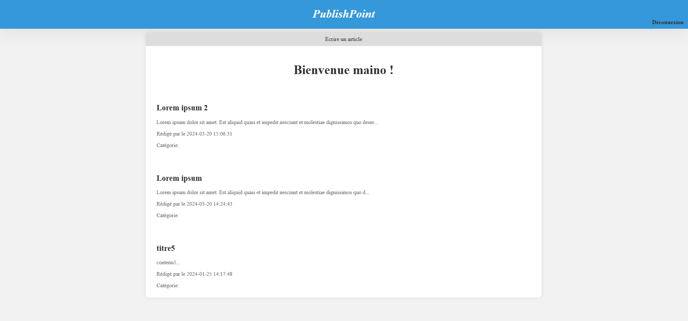

×
Svelma
Svelma est un projet en binôme. Il s'agit d'une application web collaborative développée avec SvelteKit, permettant
d’explorer des films, acteurs et équipes techniques grâce à l’API TMDB. Le site propose
un moteur de recherche, des filtres, la pagination, et des pages détaillées pour chaque
film ou personne, avec un design responsive et une gestion d’erreurs adaptée.
J’ai participé à la gestion et au développement collaboratif du projet Svelma,
une application web sur le cinéma. Nous avons défini ensemble la répartition des tâches :
je me suis chargée de l’intégration du back-end (connexion à l’API TMDB, création des
endpoints, gestion des données et pagination), tandis que mon binôme s’occupait du front-end
(maquettes, intégration visuelle, composants Svelte).
Nous avons utilisé GitHub pour organiser le travail : chaque nouvelle fonctionnalité était
développée sur une branche dédiée, puis soumise en Pull Request pour relecture et validation
par l’autre membre de l’équipe avant d’être fusionnée sur la branche principale.
Nous avons également mis en place un workflow de déploiement continu sur Netlify, permettant
de déployer automatiquement la dernière version validée du projet.
- Plateforme de gestion de code source : GitHub (branches, Pull Requests, revue de code, releases)br
- Outils de communication et de suivi : GitHub Issues, commentaires sur les PR
- Outil de déploiement : Netlify (déploiement automatique via GitHub Actions)
- Outils de développement : SvelteKit, JavaScript, SCSS, API TMDb, Postman pour les tests d’API
×
Find My Gem
Le projet Find My Gem a été réalisé par une équipe de quatre étudiants issus de trois
formations à MyDigital School Lille : une étudiante en B3 Web Design UX/UI, 2 étudiants
en B3 Webmarketing & Social Media, et moi étudiante B3 Développement Web.
Find My Gem est une plateforme en ligne qui met en relation des clients à la recherche
de bijoux uniques et des artisans bijoutiers français. Notre solution répond à une demande
croissante d’authenticité, de personnalisation et de valorisation de l’artisanat local.
Grâce à Find My Gem, chaque client peut soumettre son idée de bijou sur mesure , recevoir
plusieurs propositions de créateurs, comparer les offres et collaborer directement avec l’artisan
de son choix. La plateforme facilite ainsi la création de pièces uniques tout en offrant une
vitrine moderne et gratuite aux artisans bijoutiers.
L’architecture de Find My Gem repose sur trois couches principales.
Frontend :
La couche frontend correspond à l’interface utilisateur, développée avec SvelteKit et TypeScript.
Elle gère l’affichage, la navigation, la validation des formulaires et la communication avec le
backend via des requêtes HTTP. Le frontend est responsable de l’expérience utilisateur, de la
présentation des données et de l’accessibilité sur tous les supports.
Backend :
La couche backend, également basé sur SvelteKit (endpoints), expose une API REST sécurisée qui
centralise la logique métier : gestion des utilisateurs, des demandes, des devis, des commandes,
des paiements, etc. Il assure l’authentification, l’autorisation, la validation des données et la
gestion des rôles. Le backend fait le lien entre le frontend et la base de données via des requêtes
Typescript, tout en garantissant la sécurité et la cohérence des échanges.
Base de données :
La base de données MySQL stocke toutes les informations essentielles du projet : utilisateurs,
clients, artisans, demandes, devis, commandes, paiements, messages, avis, badges, etc. Elle est
conçue de façon relationnelle pour garantir l’intégrité, la sécurité et la traçabilité des données.
La structure de la base permet de répondre efficacement aux besoins métiers et d’assurer la fiabilité
des transactions.
L’utilisateur accède à la plateforme via un navigateur web (findmygem.fr).
Le frontend communique avec le backend à travers des requêtes HTTP (API REST).
Le backend traite les requêtes, applique la logique métier, gère la sécurité et interagit avec la base
de données MySQL pour lire ou modifier les informations.
Les fichiers statiques (images, uploads) sont gérés par le serveur.
L’ensemble est hébergé sur O2Switch, qui assure la disponibilité et la sécurité de la plateforme.
×
AquaTrack
Dans le cadre du module UX Design, projet AquaTrack visait à concevoir une application mobile d'hydratation pour sportifs,
en réponse à un brief client spécifique : "Comment assurer une hydratation optimale pour
Simone tout au long de son marathon, en tenant compte de son emploi du temps chargé et du
climat de Milan ?". Ce projet réalisé dans le cadre du module UX Design nécessitait une
analyse approfondie des besoins utilisateurs et la création de maquettes complètes.
J'ai analysé les besoins pour une application d'hydratation destinée aux sportifs, en me
basant sur le cas d'usage d'une marathonienne (Simone) avec un emploi du temps chargé et
des contraintes climatiques (Milan). J'ai réalisé un benchmark complet des applications
existantes (Waterlama, Nike Run Club, Waterdrop, Hydro Coach), défini les personas et user stories,
puis créé les maquettes complètes sur Figma. J'ai conçu les wireframes, défini l'architecture de
l'information, créé le design system (couleurs, typographie, icônes), et développé les maquettes
pour toutes les fonctionnalités : suivi d'hydratation intelligent, planification personnalisée,
système de badges, défis entre amis, et analyse post-course.
- Analyse des besoins : Personas, user stories, cas d'usage détaillés
- Benchmark : Analyse concurrentielle (Waterlama, Nike Run Club, etc.)
- Maquettage : Figma pour wireframes et maquettes
- Design System : Palette de couleurs, typographie, iconographie cohérente
- UX Research : Analyse des parcours utilisateurs
- Prototypage : Maquettes interactives avec transitions
Le projet incluait une réflexion approfondie sur l'expérience utilisateur avec des fonctionnalités
innovantes comme l'adaptation aux conditions climatiques et l'intégration avec les calendriers d'entraînement.
Les maquettes finales ont été affinées après plusieurs itérations pour éliminer le superflu et optimiser
l'expérience utilisateur.
×
Forum Anonyme
Le projet Forum Anonyme consistait à développer une plateforme permettant aux
utilisateurs de publier des messages sous pseudonyme sans système de création de compte.
L'objectif technique était de mettre en place une architecture microservices avec Docker,
comprenant 4 services distincts : API (gestion des messages), DB (stockage), Thread (affichage)
et Sender (écriture). Ce projet s'inscrivait dans le cadre du module Conteneurisation et visait
à appliquer les principes DevOps.
Pour ce projet individuel j’ai participé à la préparation et à la mise en production de l’application en
adoptant une démarche DevOps. J’ai conçu et rédigé les Dockerfiles pour chaque service (API, Thread, Sender),
mis en place un fichier docker-compose.yml pour orchestrer l’ensemble des conteneurs, et configuré les réseaux
Docker afin d’isoler la base de données et l’API du reste des services. J’ai également veillé à la persistance
des données via les volumes Docker et à la sécurité des échanges entre services. Toutes les étapes ont été
réalisées dans un environnement de développement local, en respectant les bonnes pratiques DevOps.
- Docker : Conteneurisation des services (API, Thread, Sender, DB)
- Docker Compose : Orchestration multi-conteneurs, gestion des réseaux et des volumes
- Node.js, React, NestJS, MySQL : Technologies utilisées pour les différents services
- Commitizen : Respect de la convention de commit (Conventional Commits)
- Réseaux Docker : Isolation de la base de données et de l’API
- Volumes Docker : Persistance des données de la base MySQL
- Github : Versionnage du code source
×
Calculator
Dans le cadre du module Qualité Logicielle et Tests de ma formation à MyDigitalSchool,
j'ai développé une calculatrice complète en appliquant la méthodologie Test Driven Development (TDD).
L'objectif principal était de mettre en œuvre des composants métier robustes, chargés de réaliser
les opérations mathématiques (addition, soustraction, multiplication) demandées par les utilisateurs,
tout en mettant en pratique les principes du développement piloté par les tests. La calculatrice devait
également intégrer une fonctionnalité d'historique permettant de consulter les calculs précédents ou
d'effacer l'historique. L'accent était mis sur la qualité du code, la couverture de tests et l'application
rigoureuse de la méthodologie TDD.
Pour le développement de la calculatrice, j’ai d’abord installé et configuré l’environnement de travail
adapté au projet : initialisation du projet avec npm, configuration de TypeScript, ESLint et Prettier pour
garantir la qualité du code, et mise en place de Vitest et Playwright pour les tests. J’ai ensuite développé
l’interface utilisateur avec React, en créant un composant principal (CalculatorUI) qui permet à l’utilisateur
de saisir des opérations, d’afficher le résultat et de consulter ou effacer l’historique des calculs.
J’ai également appliqué une feuille de style personnalisée pour assurer une expérience utilisateur agréable.
Mon travail a consisté à développer la logique métier de la calculatrice dans une classe dédiée, testée
unitairement avec Vitest mais aussi des test e2e avec Playwright. Les principaux composants métier développés sont :
- Le moteur de calcul : Ce composant gère la logique des opérations arithmétiques de base (addition, soustraction,
multiplication). J'ai écrit des tests pour chaque opération avant d'implémenter la logique correspondante.
- Le gestionnaire d'historique : Ce composant est responsable de l'enregistrement, de la consultation et
de la suppression de l'historique des calculs effectués par l'utilisateur. Les tests ont couvert ces différentes
fonctionnalités.
Pour chaque fonctionnalité, j'ai suivi le cycle TDD : écrire un test qui échoue (Rouge), écrire le code minimal
pour faire passer le test (Vert), puis refactoriser le code pour améliorer sa structure tout en maintenant les tests
au vert. Cette approche a permis de construire des composants métier fiables et bien testés.
J'ai préparé et exécuté les plans de tests complets pour la Calculatrice. Cela incluait la rédaction, la maintenance
et l'exécution des tests unitaires (Vitest) pour assurer la fiabilité des composants métier, notamment la logique
de calcul et la gestion de l’historique. J'ai également développé des tests End-to-End avec Playwright pour valider
les parcours utilisateurs sur l’interface graphique.
-Gestionnaire de paquets : npm
-Langage : TypeScript
-Framework UI : React
-Outils de qualité de code : ESLint, Prettier
-Méthodologie : Test Driven Development (TDD)
-Outils de tests : Vitest (unitaires), Playwright (e2e)
-Outils de build et de développement : Vite
-Feuilles de style personnalisées : CSS
×
HCC Handball API
Le projet vise à développer une API REST sécurisée, réalisée avec NestJS et une base de données SQLite, afin de gérer
les adhérents, les matchs et les actualités du club. Cette API est destinée à alimenter un site web et une application mobile,
afin de promouvoir ses activités, avec un fil d'actualités et un espace membre pour les adhérents.
J'ai défini l'architecture logicielle complète de l'API Handball en utilisant le framework NestJS. J'ai structuré
l'application en modules distincts (auth, users, matches, news), chacun comprenant ses propres contrôleurs pour la
gestion des requêtes HTTP, ses services pour la logique métier, et ses entités pour l'accès aux données via TypeORM.
J'ai mis en place une authentification sécurisée par JWT, ainsi que des guards pour la gestion des rôles (coach, contributeur,
joueur) et la protection des routes selon les droits d'accès. Pour la partie accès aux données SQL, j'ai créé les
composants d'accès aux données avec TypeORM, implémenté les repositories pour les entités (adhérents, matchs, actualités),
et développé les services métier intégrant la gestion des rôles et des permissions.
-Framework : NestJS (structuration en modules, contrôleurs, services)
-ORM & Base de données : TypeORM avec base SQLite (gestion des entités et relations)
-Sécurité : Authentification JWT, Passport, guards personnalisés pour la gestion des rôles et des accès
-Configuration : Variables d’environnement gérées avec dotenv
-Documentation : Swagger (OpenAPI) pour la documentation interactive de l’API
-Validation : class-validator et DTOs pour la validation des données.
×
Teny Zaraina
Voir les articles de mon blog de stage
×
Blog PublishPoint
Le projet consiste à créer un blog, en PHP, avec une interface d'administration pour
gérer les articles, une page d'accueil pour afficher la liste des articles
avec des liens vers leurs détails, et une page de détails d'article affichant
le contenu complet de l'article, les informations sur l'auteur, les commentaires
existants et un formulaire pour ajouter de nouveaux commentaires.
Maquette



×
Projet GPT Tkinter
Ce projet consiste à réaliser une application desktop avec une interface graphique
en Python, utilisant la librairie Tkinter, permettant d'interagir avec un modèle d'intelligence
artificielle via une API sur huggingface. L'objectif est de créer une interface conviviale
où l'utilisateur peut saisir un prompt et visualiser la réponse générée par le modèle IA.
Maquette
×
Flappy Bird
- Capture video de Unity (à mettre plus tard)
×
Maze Game C#
Ce projet consiste à développer un jeu avec le framework MonoGame.
On a décider de développer un jeu de labyrinthe. Dans ce jeu de labyrinthe, le joueur doit
naviguer à travers un dédale de couloirs pour atteindre la sortie tout en évitant les monstres.
Voici les règles principales du jeu :
Objectif :
- Le joueur doit atteindre la sortie du labyrinthe pour remporter la partie.
Vie du Joueur :
- Le joueur commence avec 3 vies.
- Une vie est perdue chaque fois que le joueur entre en collision avec un monstre.
- Si le joueur perd toutes ses vies, c'est un Game Over.
Gestion du Temps :
- Le temps de jeu est défini à 60 secondes par défaut.
- Si le temps imparti est écoulé, c'est également un Game Over.
Score :
- Le score du joueur augmente progressivement en fonction du temps passé dans le labyrinthe.
- Le joueur gagne 3 points toutes les 20 secondes.
- Le score est affiché à l'écran Game Over en cas d'échec ou à l'écran "Gagné" si le joueur atteint la sortie.
Éléments Manquants :
- Des pièces à ramasser seront ajoutées ultérieurement pour enrichir le gameplay.
Eléments du jeu
héro:

monstres :


vie:

×
Infinite Runner
- Capture video de Unity (à mettre plus tard)
×
AI-StoryCraft Django - React
StoryCraft est une plateforme de narration interactive en streaming, utilisant
l'intelligence artificielle pour personnaliser l'expérience de lecture et créer des histoires dynamiques
adaptées aux préférences des utilisateurs.
StoryCraft est un projet de groupe de 3 personnes. Mon rôle était la gestion du frontend, à partir de
l'intégration IA qui a été fait par l'un des membres du groupe, et la gestion de la base de donnée entre
le backend et le frontend.
Technologie utilisées:
SQL
Python-Django
Javascript-React
GPT-2
Maquette
Inscription/Connexion
Les utilisateurs peuvent saisir leur nom d'utilisateur, leur adresse e-mail et leur mot de passe pour
créer un nouveau compte. Les informations saisies sont enregistrées dans la base de données pour permettre une
connexion ultérieure.
- Utilisateurs Backend Django

- Inscription/Connexion Frontend React :

Generation d'histoire Backend Django
Notre générateur d'histoires interactif permet aux utilisateurs de personnaliser divers aspects de leur histoire,
tels que les personnages, les paramètres et les éléments de l'intrigue, en fonction de leurs préférences."
Une fois que les utilisateurs ont généré leur histoire, ils peuvent explorer le contenu créé et plonger dans des
aventures captivantes directement depuis l'application.
Page d'accueil
La page d'accueil de StoryCraft offre aux utilisateurs un accès facile aux fonctionnalités principales de l'application,
notamment la génération d'histoires, la consultation des favoris et la découverte de la communauté.
Page Favories
Les utilisateurs peuvent sauvegarder leurs histoires préférées et y accéder facilement depuis la page des favoris,
ce qui leur permet de revenir et de revisiter leurs histoires préférées à tout moment.
 TypeScript
TypeScript
 Next.js
Next.js
 SvelteKit
SvelteKit
 NestJS
NestJS
 Tailwind CSS
Tailwind CSS
 MonoGame
MonoGame
 GitHub
GitHub
 CI/CD
CI/CD
 Figma
Figma
 Trello
Trello
 Prettier
Prettier
 ESLint
ESLint
 Swagger
Swagger
 Jest
Jest
 Playwright
Playwright